Chức năng khai báo dịch vụ công được tích hợp trên phần mềm ECUS5VNACCS giúp doanh nghiệp tiện cho việc khai báo, với đầy đủ các nghiệp vụ như trên website dịch vụ công pus.customs.gov.vn của cơ quan Hải quan, ví dụ như:
Hủy tờ khai Hải quan.
Hoàn thuế theo thông tư 38.
Khai bổ sung hồ sơ khai thuế.
....
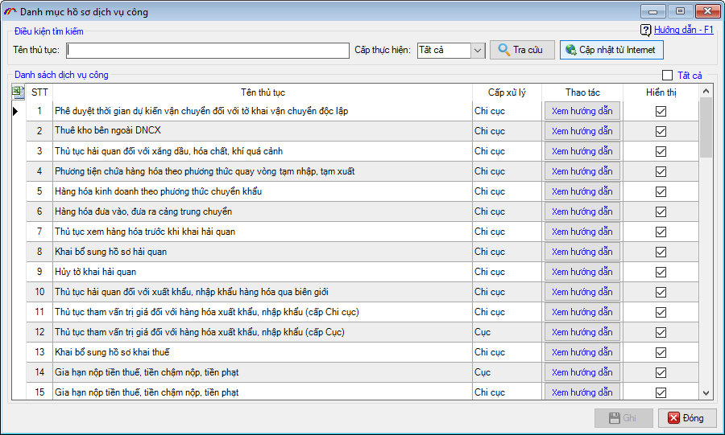
Sau đây là hướng dẫn chi tiết các bước thực hiện khai báo dịch vụ công trên phần ECUS5VNACCS của công ty Thái Sơn.
Doanh nghiệp có thể tham khảo trước hướng dẫn khai báo thông qua video hướng dẫn sau:
Trước khi thực hiện khai báo các nghiệp vụ dịch vụ công trên phần mềm ECUS5VNACCS, doanh nghiệp cần phải tiến hành đăng nhập hệ thống bằng cách vào menu "Dịch vụ công" chọn "Tài khoản dịch vụ công":
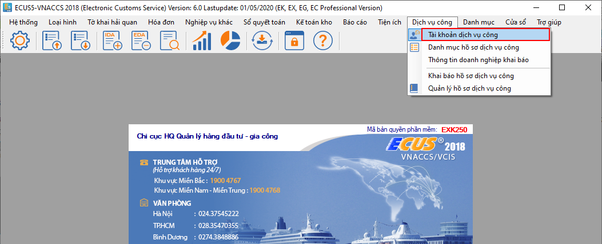
Màn hình chức năng hiện ra như sau:
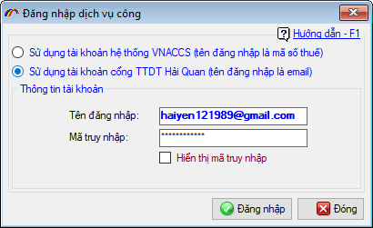
Doanh nghiệp tiến hành đăng nhập với hai lựa chọn cụ thể như sau:
(1). Sử dụng tài khoản hệ thống VNACCS (tên đăng nhập là mã số thuế):
Với lựa chọn này doanh nghiệp sử dụng tài khoản quản trị hệ thống VNACCS/VCIS có sẵn của doanh nghiệp mình để đăng nhập vào hệ thống mà không cần phải đăng ký tài khoản dịch vụ công nữa.
(2). Sử dụng tài khoản cổng thông tin điện tử Hải quan (tên đăng nhập là email):
Để khai báo một nghiệp vụ mới, bạn vào menu "Dịch vụ công" chọn "Khai báo hồ sơ dịch vụ công".
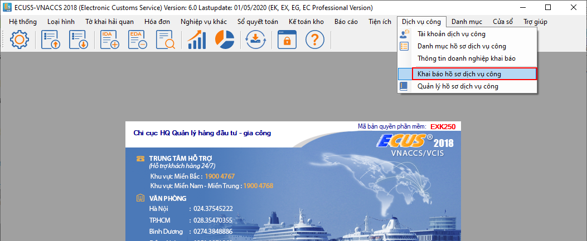
Màn hình danh sách các thủ tục hiện ra như sau:
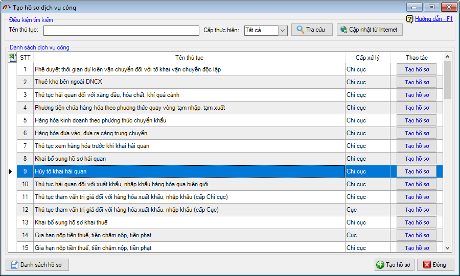
Trước khi thực hiện bạn nên cập nhật danh mục hồ sơ mới nhất từ hệ thống bằng cách nhấn vào nút “Cập nhật từ internet”. Muốn khai báo thủ tục nào thì bạn nhấn vào nút "Nộp hồ sơ" ở mục thao tác hoặc nhấn đúp chuột vào tên thủ tục.
Màn hình chức năng khai báo hiện ra sẽ có các phần bố cục như sau:
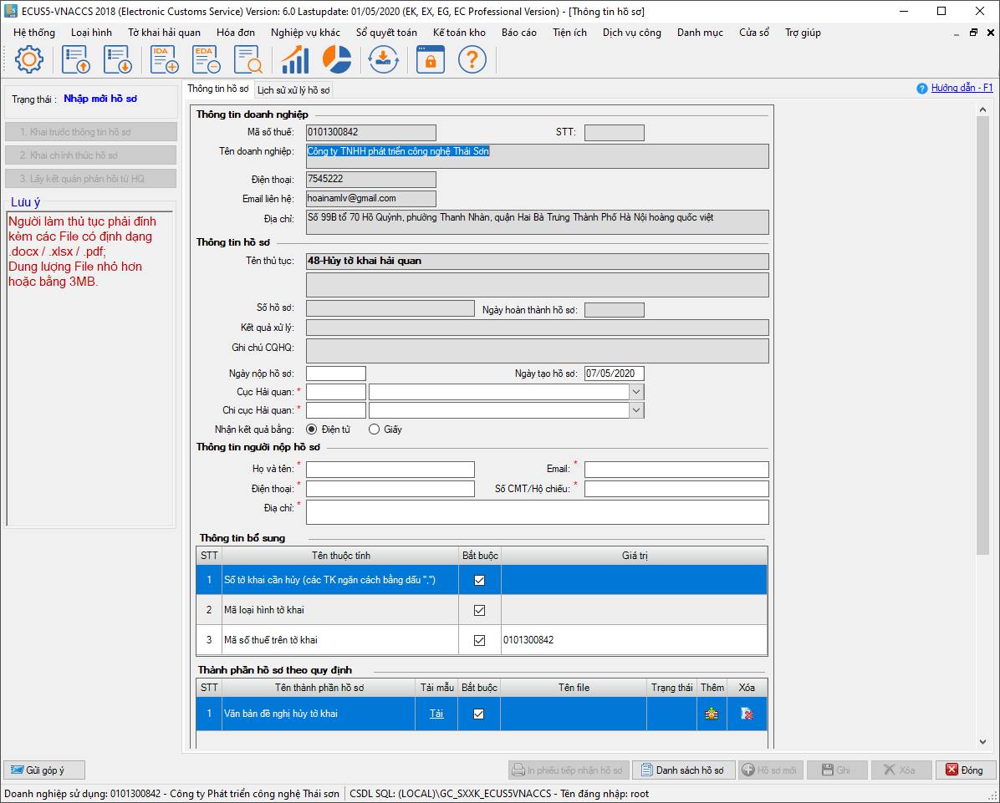
Phần 1 - Thông tin doanh nghiệp: Đây là các thông tin về doanh nghiệp đang khai báo thủ tục được phần mềm tự động lấy vào do đó bạn không cần phải nhập.
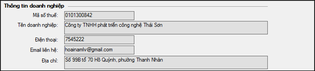
Phần 2 - Thông tin về hồ sơ khai báo: Đây là mục chứa các thông tin về hồ sơ như Số hồ sơ, Ngày hoàn thành hồ sơ (được cơ quan Hải quan trả về), Thông tin về cơ quan Hải quan tiếp nhận hồ sơ.
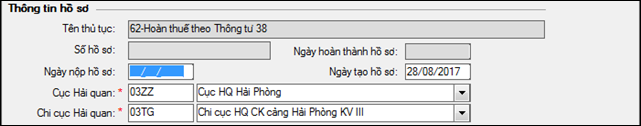
Phần 3 - Thông tin người nộp hồ sơ: Đây là các thông tin chi tiết, thông tin người liên hệ, người nộp hồ sơ dịch vụ công.
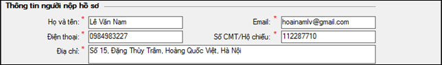
Phần 4 - Thành phần hồ sơ theo quy định: Đây là mục quan trọng về hồ sơ đang khai báo, phần mềm sẽ tự động liệt kê danh sách các thành phần bắt buộc phải nộp của bộ hồ sơ. Doanh nghiệp chỉ cần thực hiện ký số và đính kèm file hồ sơ vào danh sách (Trường hợp file bạn đính kèm chưa được ký số thì lúc thực hiện lưu hồ sơ, phần mềm sẽ yêu cầu ký số cho các file này).
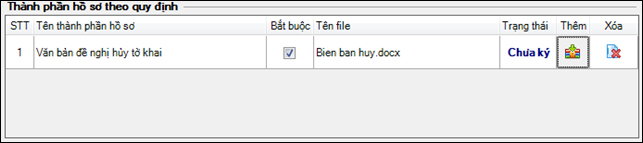
Phần 5 - Thông tin bổ sung (với một số thủ tục): Một số thủ tục yêu cầu bạn khai báo thêm thông tin bổ sung bằng cách nhập chi tiết các chỉ tiêu (không phải đính kèm file), ví dụ đối với thủ tục Hủy tờ khai, thông tin khai bổ sung bao gồm: Số tờ khai, Mã loại hình tờ khai.
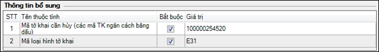
Phần 6 - Tệp đính kèm khác (nếu có) và Thông tin ghi chú cho hồ sơ: Trường hợp hồ sơ của bạn có thêm các file đính kèm khác ngoài hồ sơ có trong danh sách hồ sơ theo quy định, bạn thực hiện đính kèm vào tại mục này, đồng thời nhập vào chi tiết ghi chú khai báo hồ sơ.
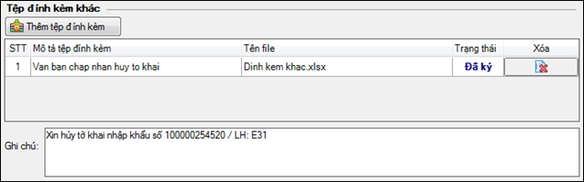
Sau đây chúng tôi xin hướng dẫn thực hiện mẫu quy trình khai báo thủ tục "Hủy tờ khai Hải quan":
Bạn nhấn chọn "Nộp hồ sơ" tại mục 8 với tên thủ tục "Hủy tờ khai hải quan", màn hình chức năng hiện ra như sau:
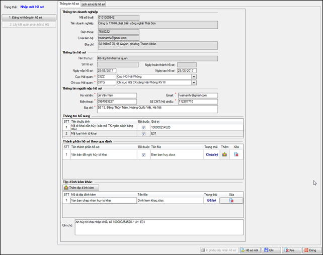
Bạn lần lượt nhập thông tin về Cục, chi cục Hải quan tiếp nhận hồ sơ, thông tin người nộp hồ sơ. Tại phần Thông tin bổ sung bạn nhập vào như sau:
Mã tờ khai cần hủy (các mã TK ngăn cách bằng dấu ,): Nhập vào số tờ khai cần hủy, bạn có thể nhập nhiều tờ khai với mỗi tờ khai cách nhau bằng dấu phẩy ',
Mã loại hình: Nhập vào mã loại hình của tờ khai
Tại mục Thành phần hồ sơ theo quy định bạn nhấn vào biểu tượng để tìm và chọn file văn bản đề nghị hủy (có chữ ký và đóng dấu của chủ doanh nghiệp).
Trường hợp đính kèm nhầm hoặc sai, bạn nhấn vào biểu tượng
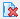
để xóa file vừa đính kèm và chọn lại file mới thay thế.
Mục Trạng thái sẽ thể hiện trạng thái ký số của file chứng từ bạn đính kèm, nếu chứng từ được ký trước ký đính kèm trạng thái sẽ thể hiện là 'Đã ký'. Trường hợp file chứng từ chưa được ký số, phần mềm sẽ hiện thị trạng thái là 'Chưa ký' đồng thời sẽ yêu cầu bạn thực hiện ký lúc nhấn vào nút 'Ghi' hồ sơ.
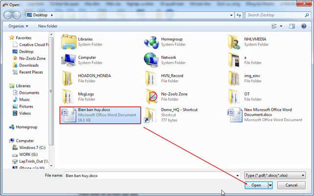
Tại mục Tệp đính kèm khác, để thêm một file đính kèm bạn nhấn vào nút 'Thêm tệp đính kèm' , bạn có thể thêm được nhiều file đính kèm tại mục này nếu cần thiết. Sau khi hoàn tất việc nhập dữ liệu và đính kèm file cho hồ sơ, bạn nhấn vào "Ghi" để ghi lại thông tin hồ sơ.
Do có 1 file đính kèm có trạng thái Chưa ký do đó phần mềm sẽ hiện thông báo như sau:
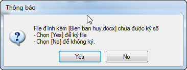
Bạn chọn Yes để thực hiện ký số, phần mềm hiển thị danh sách chữ ký số:
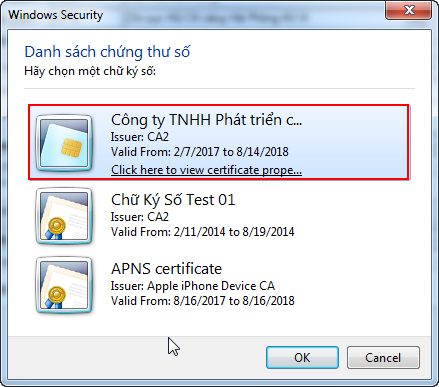
Bạn chọn chữ ký số để ký sau đó nhấn vào OK và nhập mã PIN cho thiết bị:
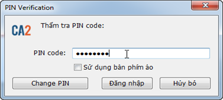
Tiếp theo bạn thực hiện nộp hồ sơ bằng cách nhấn vào nút "Đăng ký thông tin hồ sơ":
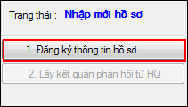
Thành công hệ thống sẽ trả về số hồ sơ, lúc này trạng thái hồ sơ chuyển thành "Hồ sơ đã được chuyển tới chi cục HQ", bạn chờ hải quan duyệt.
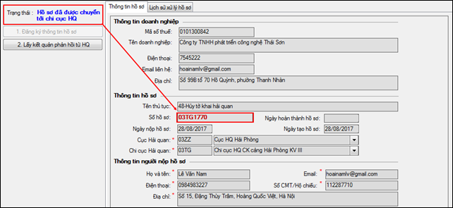
Để nhận được kết quả từ hải quan, bạn nhấn vào "Lấy kết quả phản hồi từ HQ", nếu hồ sơ bị từ chối hoặc Hải quản yêu cầu bổ sung thì lúc này trạng thái hồ sơ sẽ là "Yêu cầu bổ sung hồ sơ" đồng thời nội dung bổ sung chi tiết sẽ hiện thị tại mục "Lịch sử xử lý hồ sơ" như sau:
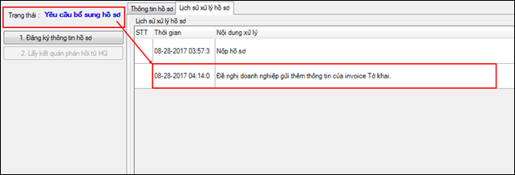
Lúc này doanh nghiệp bổ sung hồ sơ theo hướng dẫn sau đó tiến hành nộp lại hồ sơ lên cơ quan Hải quan và tiếp tục chờ duyệt.
Trường hợp hồ sơ được chấp nhận, trạng thái hồ sơ lúc này sẽ chuyển thành "Đã phát hành kết quả xử lý", đồng thời cập nhật Ngày hoàn thành hồ sơ, kết thúc quy trình khai báo hồ sơ Hủy tờ khai hải quan.
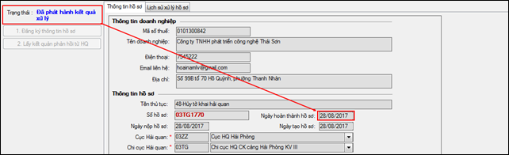
Bạn in phiếu tiếp nhận hồ sơ bằng cách nhấn vào nút "In phiếu tiếp nhận hồ sơ":
Đây là chức năng giúp bạn quản lý các hồ sơ đã gửi lên cơ quan hải quan, bạn vào menu “Dịch vụ công / Quản lý hồ sơ dịch vụ công”:
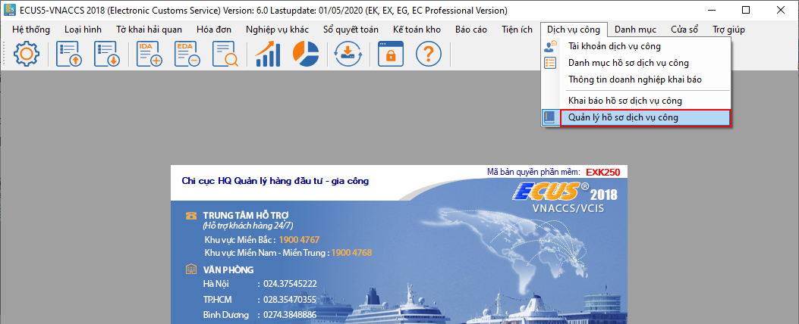
Danh sách các hồ sơ, mã hồ sơ cùng với trạng thái xử lý để bạn tiện theo dõi, bạn cũng có thể xem chi tiết hồ sơ bằng cách chọn hồ sơ và nhấn vào nút “Chi tiết”:
Bạn vào menu “Dịch vụ công / Danh mục hồ sơ dịch vụ công”:
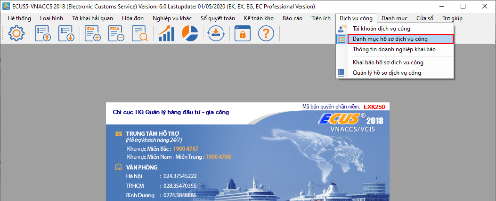
Màn hình danh sách hồ sơ hiện ra như sau:
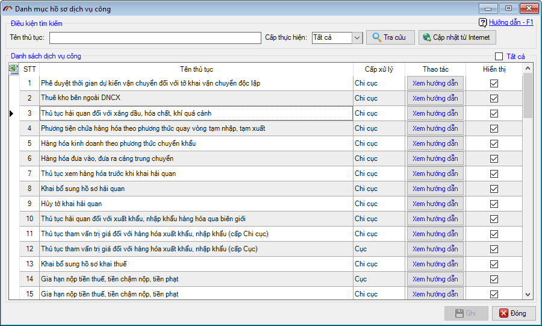
Tại đây bạn có thể cập nhật từ internet để có danh mục hồ sơ mới nhất từ hệ thống, bằng cách nhấn vào nút “Cập nhật từ internet”.
Để xem chi tiết nội, ý nghĩa, cách thức khai báo và các thành phần, số lượng hồ sơ của một thủ tục, bạn chọn vào thủ tục và nhấn vào nút “Chi tiết”, phần hướng dẫn cụ thể sẽ hiện ra ví dụ như thủ tục sau: